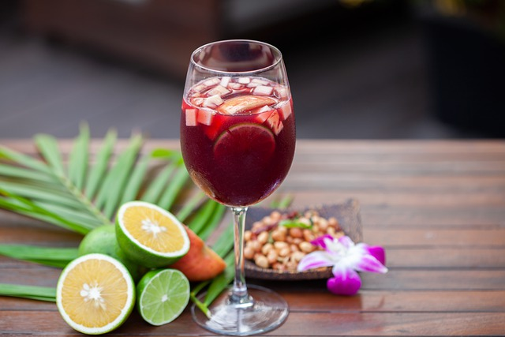
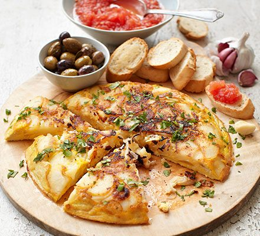

Famous Dishes!


A popular beverage in Spain is the sangria.
sangria's include a verity of fruits maranated in
Red or White wine. Sangria also stands for blood-letting.
A pouplar Dish in Spain is quesadillas.
Quesadillas are made with a tortilla and cheese.
Most people like to add vegtables, salsas, and meats for more flavor.